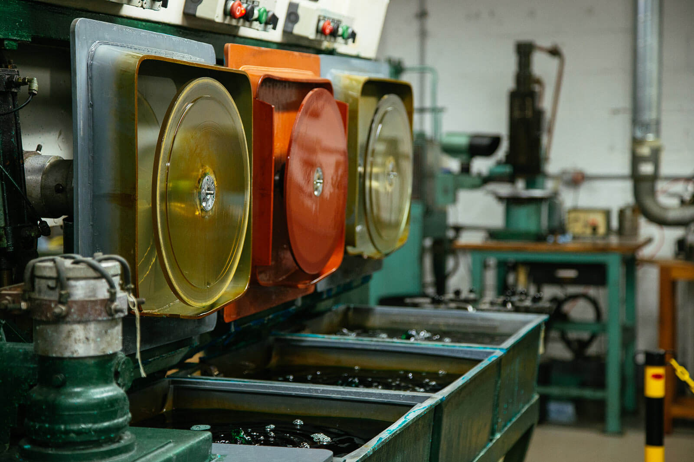

About us
Shenice Records, established in 2001, has been a cornerstone of the music community for 23 years. Born from a passion for vinyl and the tactile joy of physical music, we've grown into a trusted source for audiophiles and collectors alike. Our commitment to quality sound and artist collaboration has led us to partner with 43 talented musicians, including notable names like Finneas Joel Armstrong and Joy Multiplication, helping them bring their music to life on vinyl. At Shenice Records, we believe music is an art form best experienced through the warmth and depth of vinyl.
Web Design Project made by: Fletcher Ricafrente
Professor: Archie Santiago
